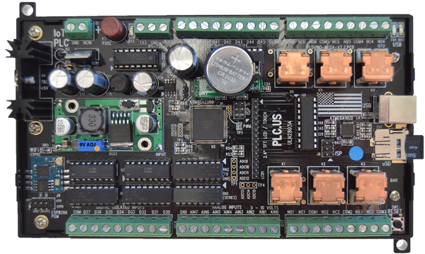
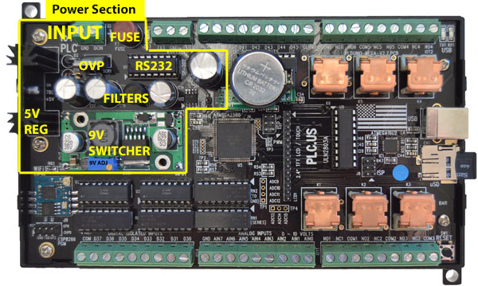
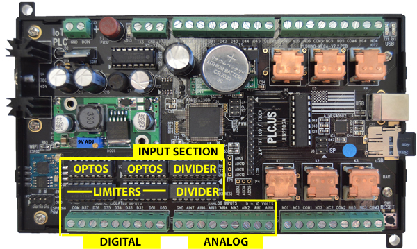
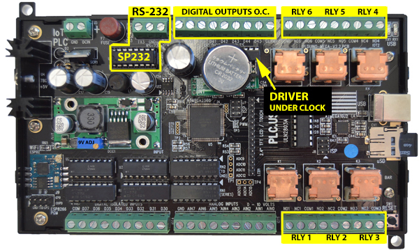
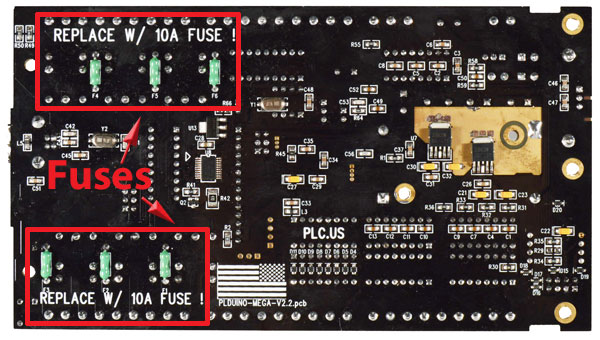
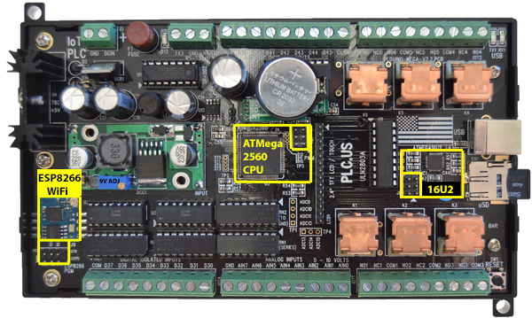
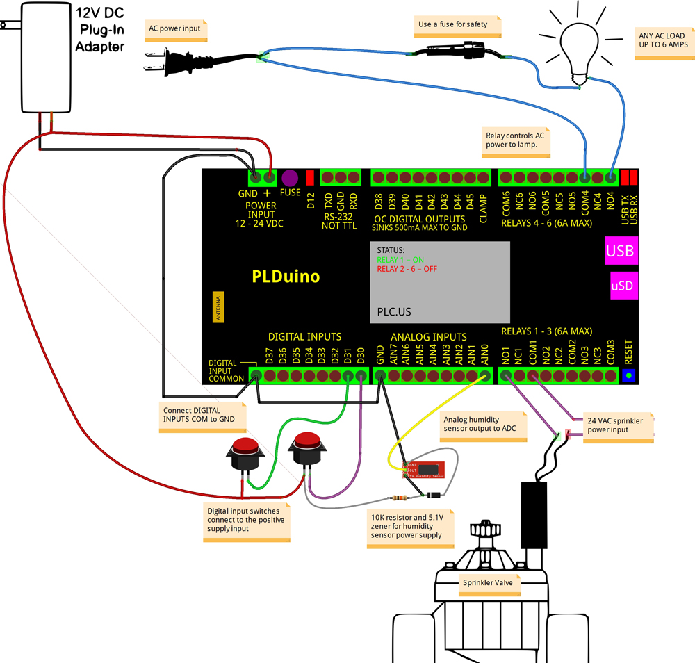
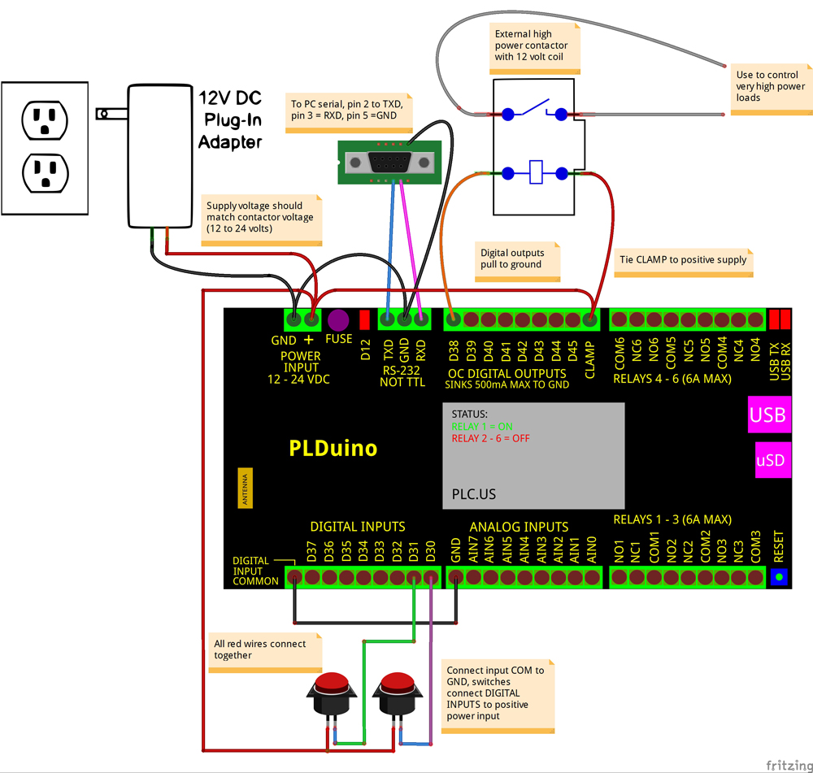

Open Source PLC Hardware

Welcome. This PLC is entirely open-source to encourage development. You can start here:
- The demo source and sample code are here: https://github.com/digitalloggers/PLDuino
- Getting started with Arduino: www.digital-loggers.com/plcsw.html
- The latest hardware description:
www.digital-loggers.com/plchw.html
The online version has many useful off-site links. - A full bill-of-materials for the PLC: www.digital-loggers.com/plcbom.htm
- Detailed schematics:
www.digital-loggers.com/plcschematics.pdf
Getting Inside
We suggest you start by applying power to run the demo. After that, install Arduino and begin customizing. Most customers don't bother opening the case, but if you can't resist..., here's how: First, remove the micro-SD card to avoid damaging it. The card is located in a small slot to the left of the USB connector. Press gently in the slot with your fingernail. The card pops out.
Next, set the case on it's side, with the antenna down and USB jack up. Using a pen or small screwdriver, press gently on the latches to the side of the SD and USB connectors. Pull the case halves apart lightly while clicking the latches. Easy does it. Apply a very light pressure on the latches until they click. Use technique, not force. You may now disconnect the LCD cable for better access to the board. We don't recommend disconnecting the grey WiFi antenna cable. Small U.FL connectors are hard to align and easy to damage.
You're in. Let's look under the hood:

Powering the PLC

The PLC is designed to run from 12 to 24 volts DC at 250-500mA, via J3. The power input is via two screw terminals in the upper left corner. The power input is protected against reversed polarity by diode D2. Input power voltage transients over 43V are clamped to ground by TVS D1 P6KE43CA. Input over-voltage protection is accomplished by a crowbar circuit set to about 32 volts (D14 and SCR1). Voltages over 32V will cause the 1 Amp fuse F1 to blow, protecting the PLC. Replace the input power fuse with a fast-blow type after reducing the power supply voltage. A switching regulator takes the input voltage (less about 0.5V lost in D2) and efficiently down-converts it to 9VDC for driving the relays. The relay coils can handle 12V, but they will operate at about 80% of their maximum pull-in speed at 9V, with much lower lower power dissipation. A 7805 linear regulator, U4, takes the 9 volts down to 5 volts at a low noise level for the microcontrollers. Two separate 3.3v switched regulators are provided. U6 powers the 3.3V ESP8266 Wifi module, and U7 drives the 3.3V LCD, Touchscreen and SD card. The ESP8266 module may be power cycled by setting Arduino digital pin D26 low (power off) then high (power on). The LCD and touchscreen module and the SD card may be power cycled by setting Arduino digital pin D27 low (power off) then high (power on). The audio amplifier runs on the 5V power rail.
Inputs
There are 8 digital and 8 analog inputs:

Digital Inputs
The digital inputs are located on the bottom left screw terminals. Digital inputs are fully isolated from the outside world by opto-couplers. The opto-couplers have bi-directional LEDs which will respond to inputs of either polarity and may be used for AC or DC detection. As shipped, there are 6K Ohms of resistance in series with the LED's. Recommend input input voltage is from 3 volts to 24 volts. External resistors can be added to increase the input voltage limits. For example, adding an external 6K series resistor would change the input range to 6-48V. Consider V^2/R power dissipation in external series resistors when using high voltage inputs. The input current must be kept below 20 mA to avoid damaging the opto-coupler LEDs. The opto-coupler outputs are connected to the Atmel 2560 microcontroller. The corresponding Atmel input pins must have the internal pull-up resistors enabled in software to be able to detect the opto-coupler outputs reliability. The digital inputs share a common pin on the terminal strip. This common pin can be either connected to 3-24V, or it may be connected to ground. Supplying a positive power to the common pin creates active-low inputs. Grounding the common pin creates active-high inputs. For example, if contact closure inputs are desired, connect the common pin to the PLC negative power supply input and a contact from the positive supply input to a digital input pin.
Analog Inputs
The analog inputs are on the screw terminals in the bottom center of the board. As shipped, the analog inputs are set up for 0 to 10 volt signals. The input divider resistors are in DIP packages which are socketed for replacement, or to alter the input voltage range. Voltage dividers made of DIP resistor packs set the division ratio (RN1 and RN2). The voltage "seen" by the ADC equals InputVoltage*RN2/(RN1+RN2). This voltage should not exceed the reference voltage selected in software, ie. 5.0V or less. 100K Ohm packs are supplied for a 10V measuring range. This yields a scaling factor of 9.804mv/count. You can calibrate this using an external DMM and a linear calibration factor. Changing RN1 to 200K Ohms would give an 0 to 15 volt input range. These analog inputs are not isolated but are referenced to ground, the negative input on J3, the power input connector. They are protected against negative inputs and over-voltage by zener diodes. The analog inputs are connected to Arduino pins A0 through A7. The analog inputs could also be used as digital inputs if preferred. Replacing RN1 with a 1K Ohm pack will give a TTL compatible input 0-5V range. A ninth analog channel A8 is used to monitor the PLC's power input. This can be used for under voltage lockout or battery voltage monitoring. It is advisable to shut down the unit in software if the input voltage falls below 11V, as relay operation could become unreliable if the 9V power rail drops. The input voltage is monitored after the D2 reverse protection diode, so will typically read about 0.5 volts lower than the actual voltage input. There is a voltage divider, made up of R56 an R57, so the voltage on A8 will be 1/3 of the input voltage. The approximate scaling factor for ADC8 is 15.4mv/count.
Outputs
There are six relays and eight open-collector digital outputs:

Relays
The relays are located on the right side of the PLC. Relays 6,5, and 4 are on the top with 1,2 and 3 on the bottom. All six relays are driven from the microcontroller through ULN2803 U9 which also provides inductive kickback protection. Kickback can be generated by the relay coils themselves or by external loads. Each relay is an SPDT type protected by a 10 Amp fuse. The fuses are mounted on the bottom of the circuit board and are soldered in place. Be careful not to exceed 10 Amps or fuse replacement will be necessary. Since the terminals are rated at 6A, we suggest an external 6A fuse for additional safety. Each relay has it's common, normally open, and normally closed terminal brought out to a terminal strip. The normally closed terminal can be used for loads that need to be on when the PLC is powered off. The relays can easily handle DC or DC loads, up to 120 VAC or 24VDC at 6 Amps. The relays may be driven at 100% (on continuously), or pulled in at 100% for 20ms, then driven with 70-80% PWM to hold the armature closed to minimize power consumption. The amount of power savings isn't much, so we suggest you drive the relays 100% unless the small savings really matters. If you do use PWM, pick a frequency 20kHz or higher so there is no vibration in the contacts. The ULN2803 driver is in a socketed DIP package for easy replacement.

Digital Open-Collector Outputs
The 8 digital outputs are driven by an open collector driver, U10 ULN2803 (datasheet) . They can be used either as logic outputs or power outputs. The driver provides inductive kickback protection for driving relays, solenoids, and other inductive loads. For protection to work properly, the positive load supply must be connected to the external load and to the digital output COMMON connection. Neglecting to connect this terminal will cause the ULN2803 (datasheet) to fail. The digital output then switches to ground when activated. Note, the digital outputs are not isolated but are referenced to the system ground. The external positive supply for these outputs can be just the input to the PLC (12 - 24 volts) or can be a different value from about 1 volt to 48 volts. If an external supply different from the PLC's power supply is used, its negative source needs to be tied to the PLC's negative power input terminal and its positive tied to the digital output COMMON terminal. The maximum power dissipation is 1W total, and 500mW per output. It is possible to damage the driver by overcurrent, so it's socketed for easy replacement.
Creating Analog Outputs using PWM
PWM stands for Pulse Width Modulation, and it's a way of producing analog outputs from digital circuits. PWM is used to control the speaker and backlight intensity in the PLC. D44 and D45 are PWM capable outputs. If you wanted, for example, a 0-24V analog output, you could place a pullup resistor, say 10k ohms between the 24V input and D44 to create an analog voltage using PWM. In some applications, adding a small filter capacitor from the output to ground is helpful to filter and smooth the analog waveform. Depending on how you program it, you will get between 8 and 16 bits of resolution. Here's the Ardunio PWM tutorial. Here's an example circuit. Of course, you can "bit bang" any bit in software to create an a PWM level, but that's processor intensive. In most cases it's best to let the hardware do it for you. Need more PWM pins for additional analog outputs? You can jumper signals marked "TP" in the schematic to create additional outputs. If you'd like to go beyond the original Arduino design, we've brought almost all the pins that were unused out to solder pads, so you can easily rewire and expand the circuit internally.
RS232 Serial Port
There is a two wire, ESD protected, RS232 serial port available on J2, a three pin terminal strip. Terminal 1 is RXD, the data into the Atmel microcontroller, terminal 2 is ground and terminal 3 is TXD, the data transmitted out of the microcontroller. The levels are RS232 (+/- 5 to 12 volts) not TTL. Avoid connecting the RS232 output to a TTL device. It will likely damage the device. Atmel serial port 3 is used. The SP202 RS232 translator chip, U1 is socketed for easy replacement if necessary. If you have a requirement for TTL levels, it's possible to convert the PLC to output TTL by removing the RS232 driver chip (U1, an SP202) and jumpering pins 11 to 14 and pins 12 to 13 in the IC socket. Note, this modification removes the input protection on the 2560 serial port, so be cautious. In the unlikely event that you damage the RS-232 driver chip, call us and we'll mail you a replacement. They're socketed.
Arduino Compatible Control Board
The PLC control logic and peripherals are divided into these sections:

Microcontroller
The microcomputer section is Arduino MEGA compatible, including the USB port. An Atmel ATMEGA16U2 is used for the USB to serial interface and comes programmed that way when the PLC ships. You could reprogram it for other functions, like a watchdog for example. The main CPU is the ubiquitous Atmel ATMEGA2560. Both controllers run at 16 MHz. Boards are supplied programmed with the Arduino bootloader code installed allowing easy programming through the standard Arduino environment. Although the 16U2 comes programmed as a power-on-reset generator and USB interface, there's no reason you can't use it for many other purposes. The 2560's USB LEDs are brought out to the edge of the board so they can be seen with the cover installed, along with the standard, D13, Arduino LED. The 2560's reset line is connected to a switch that's accessible with the cover installed. Programming headers (standard Atmel 6-pin 2x3 types with .1" spacing) are supplied for both Atmel controllers. These are useful if the bootloader code is accidentally overwritten, and for custom programming applications that need the bootloader space. The terminal names on the PLC match the legends on the Aurdino 2560 board, so it's easy to program the PLC using the default Arduino-compatible environment. Note the Arduino labels don't match exactly the Atmega 2560 datasheet. Refer to the schematic to correlate the Atmel datasheet. All three chips, the 16U2, Mega 2560, and the ESP8266 have "de-bricking" ISP connectors so you can recover the board, even from a royal screw-up.
Peripherals
On-board peripherals include a real time clock chip, 320 x 240 color LCD, touch screen, micro SD card interface, speaker, EEPROM and a WiFi radio.
Speaker
The speaker is mounted on the top cover. Audio is driven from Arduino digital pin D9, which is a PWM pin. A small 1W audio amplifier is used. This is a speaker, not a beeper, so it is driven by toggling the pin at the desired frequency. This can be done with various tone generator libraries such as tone.h and pitches.h The demonstration code includes an audio player using PWM. If you are use the Atmel audio libraries, the PWM timer settings for the relays may be affected. To avoid interaction, drive the relays at 100% during audio playback. SPK1 is the speaker connector.
SPI Interface / Peripherals
The LCD, touch panel, and micro SD card are all driven by the hardware SPI interface of the Atmel chip. This allows fast transfers to/from the devices. These devices use 3.3 volt logic so a level translator, U8 is used. They also have a common switched 3.3 volt regulator, U7, which can be turned on/off by Arduino pin D27. This can be used to power them down, or to reset locked up devices, just in case. An 4GB micro-SD card comes with the PLC.
The 2.4" 320x240 LCD uses an ILI9341 controller. It's compatible with the Adafruit IL9341 driver and GFX graphics library. The LCD backlight can be controlled by Arduino pin D46 which can use PWM to control it's brightness. The LCD uses 16 bits for color information, 565 format. This allows for almost true color display. The touch screen controller is XPT2046 compatible. The LCD is mounted on the top cover. Be careful when disconnecting it. LCD cables are fragile.
ESP8266 WiFi
The WiFi radio is based on the ESP8266 WiFi chip and is similar to ESP-02 design. The main difference ESP radios come with 16Mb=2MB FLASH, yours has 128Mb = 16MB. Note that it may take 7-8 minutes to fully format a 16MB chip. The ESP is is powered from it's own 3.3 volt regulator U6, which is controlled by Arduino pin D26. The radio uses Atmel serial port 2 for communication. There is no internal antenna, an external antenna is supplied for better WiFi range. The ESP8266's firmware can be upgraded through the Atmel, via WiFi or directly through an programming header, J9, available when the cover is removed. As provided, the ESP8266 is programmed with NodeMCU. It can be used as-is or reprogrammed with one of the many custom microcodes found on the Web. In code, the ESP8266 module may be power cycled by setting Arduino digital pin D26 low (power off) then high (power on). A number of public-domain tools and firmware options are available for the ESP8266. Popular platforms include the factory AT firmware, NodeMCU (includes a wonderful Lua interpreter), Arduino for the ESP8266 itself and Frankenstein. ESPLORER is a nice tool for experimenting with firmware options. We preloaded your PLC with NodeMCU because we've found it to be the most stable and reliable code base. It is memory hungry, though. We upgraded FLASH memory it to 128Mb=16MB at customer request. Consider it an "ESP on steroids".
If you attach D32 to 12-24V and DIN COM to ground, the PLC enters a factory test mode. It will check the SD card (press NEXT) to skip formatting, you then set time/date, it will then display the input status (D32 will be low), press next after that and you'll reach a relay test. There is then a digital output test, a speaker test, a UART loopback test, and finally, a WiFi test. This demo acts as an access point (AP). The device SSID shows as "Wi-Fi Test" The password is "password" (lower case). After authenticating, you can control relays, read ADCs, etc over WiFi. Firmware support is best obtained via the online communities. If you elect to use something other than NodeMCU, we'd suggest re-flashing the ESP8266 using connector J9 until your code is stable and proven. If you've opened the case, you can monitor the serial communication on J9 TX pin 3 and GND pin 1 to see how it all works.
Real Time Clock
The real time clock (RTC) uses the Dallas DS3231 chip which is compatible with the Arduino DS1307RTC.h code and Time.h libraries. It uses I2C for communication so the Wire.h library can be used. The RTC is on a removable "piggyback" board, and the battery is replaceable with a standard CR2032 lithium cell. Estimated battery life is 10-15 years.
I2C Memory Expansion Socket
There is a 32K socketed EEPROM that can be used for non-volatile storage that's also connected to the I2C bus. Because it has a large write-endurance, EEPROM is usually the best place to store data that's frequently updated. Other 5V chips a standard 8 pin DIP package such as FRAM, SRAM, Larger EEPROM etc can be substituted. The pinout is 1=AO,2=A1,3=A2,4=GND,5=SBA, 6=SCL,7=TEST (grounded), 8=5V VCC. The socket could also be used as an expansion port via an 8-pin ribbon cable plug. Although it's a bit inconvenient, this chip has been located beneath the clock module to gain space for reprogramming headers.
ESP8266 De-Bricking / Switching to AT Firmware
If you stay within the confines of the stable 2560 & Arduino / ESP & NodeMCU environments, you won't need to read this section. However, just in case you need them, standard ISP connectors are provided for all three parts: the 16U2, the Mega 2560, and the ESP. The Atmel connectors are compatible with the AVR-ISP Mk II and clones. Spacing is the .1" standard. Pin 1 is marked with an arrowhead. Unless you reprogram the fuse bits or lock your code, it's unlikely that you'll need this. But it's there to help if you need it.
To customize the ESP8266, there is a programming header below the module. ESP signal names are marked on the PCB. When connecting directly to an ESP8266, be sure to use a USB to TTL converter that is designed for 3.3V Although we have added protection diodes to production boards, we recommend not apply 5 volts or using a "3.3 or 5V" compliant adapter. The chip is designed for 3.3V operation. A warning about the large ESP FLASH: It can take up to 7 minutes to fully format the NodeMCU flash "file system". Don't power-down during that time. Want to try AT code instead of Lua? Check the command set. Learn more here, compile your own, or load this binary at offset 0x0000.
Flashing tools are here. The NODEMCU flasher tool has a 16MB selection. Although the Espressif V 1.2 tool doesn't display a selection for large flash, it programs the 128Mb=16MB chip just fine.
Wiring Examples
Here are a few Fritzing examples:
Controlling a Lamp and Sprinklers

The first example shows how to use the relays to control an AC lamp and a sprinkler valve. A 12 volt, 1 Amp adapter is used to power the PLC. Connect it's positive output to the + input and it's negative output to ground. The lamp is controlled by relay number 4. An AC cord is used as the power to the lamp. It's a good idea to insert a fuse in the AC line to protect the PLC relay and it's internal fuse, which is soldered onto the bottom of the PLC's circuit board. The internal fuse is 10 Amps so use something smaller, 6 Amps or less. Connect the line (hot) side of the AC cord to the fuse and the neutral side to the COM4 terminal on the PLC. The NO4 terminal connects to one side of the lamp and the other side of the lamp connects back to the fuse. When relay 4 is command ON, then the lamp will light. NO stands for "normally open" and NC stands for "normally closed". They are the states of the relay contacts when the relay is not energized. A sprinkler valve is controlled the same way. They do not use 120V AC mains voltage to operate, but instead use 24 Volts AC from a step down transformer. A valve is shown connected to relay 1. Two push button switches are shown connected to the digital inputs (D30 and D31). The digital inputs are isolated by bi-directional opto-couplers. They can be driven by signals that have no relationship to the PLC's ground connection, or by tying the Digital Input COM terminal to ground for signals that are related to ground. Here, we connect the COM terminal ground and connect the inputs, D30 and D31 through the switches to the positive power input. When a switch is pressed the input voltage will be applied to the opto-isolator channel and it's output can be read by software. The digital inputs can go as low as 3 volts so can be used to detect 3.3 volt logic signals, or as high as 24 volts to detect external motor's, PV solar, or other higher voltage sources. Note that all of the digital inputs share a common terminal so you cannot mix ground isolated inputs with ground referenced inputs. The analog inputs are setup to measure 0 to 10 Volt signals. They are protected against high voltage and reverse polarity via zener diodes.
Reading a Humidity Sensor
This Fritzing above also shows a Sparkfun analog output humidity sensor connected to AIN0. The humidity sensor needs about 5 volts for it's power supply. We generate that with a simple 5.1 Volt zener diode regulator from the PLC's input power supply. A 10K resistor should be fine for this application as the sensor uses less than 250uA. The humidity sensor can be read by software to prevent watering the lawn while it's raining outside.
Driving a High Power Contactor

Another Fritzing drawing shows how to use the digital outputs to drive a high power contactor. The contactor could be used to control high power devices like a pool pump, air conditioner, large flood lights etc. The digital outputs are non-isolated (from ground), open collector transistors. They pull the output to ground when activated. They can be used up to 48 Volts though you do have to watch out for power dissipation. Each ULN2803 output can drive 500mA but not all at once. The total current should not exceed 1 Amp to prevent overheating the driver chip. In our example, we show a high power contactor, that has a 12 Volt coil, connected to Digital Output D38. A contactor is just a relay that has very large contacts to control high current loads. The internal relays can drive up to 6 Amps each, but contactors can be added externally to control 100's of Amps. A contactor, relay, or motor is an inductive load. It's an electromagnet with a great number of wire turns. When turned off, it generates an inductive kickback (a high voltage pulse). The driver chip has a protection circuit made up of diodes inside to protect it's self from this pulse. For this to work, the clamp diodes MUST be connected to the external voltage used for the loads. This is shown in the drawing with the 12 Volt PLC input power going to the contactor and to the CLAMP terminal. Note that there is only one CLAMP terminal so all of the loads on the Digital Output terminals need to run from the same power supply which does not have to be the same one supplying power to the PLC. If an different power supply is used, it's negative terminal should be connected th the PLC's ground input and it's positive terminal connected to the CLAMP terminal and the loads. If you're interested in maximizing relay and contactor life, have a look at this article: www.dinrelay.com/relaycare.pdf
Shipping now! $89 or less!
 |
To achieve economy of scale, we're offering deep quantity discounts to dealers, OEMs and educational users.

Similar Products
Need something else? DLI builds PoE Injectors, Web Controlled Relays, 208-240V controllers and DIN relays.(c) 2016 Digital Loggers